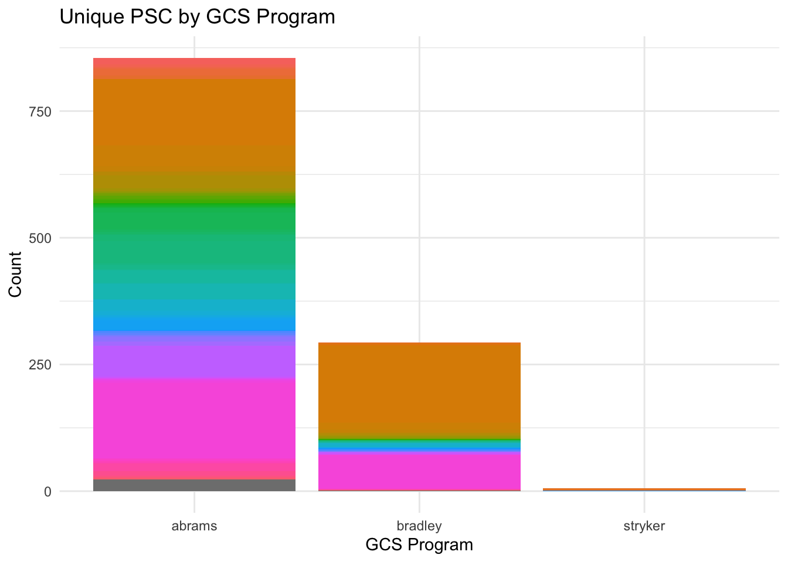

Illuminate what the potential client Department spent on the following major Ground Combat Systems (GCS) programs:
Abrams tank (e.g., M1A1)
Bradley fighting vehicle (e.g., M2A1)
Stryker armored personnel carrier (e.g., M1130)
Analysis Requirements
Produce an analysis of FY16 through FY20 federal contract data for these programs:
Summarize prominent vendors, funding/contracting offices, and agencies
Outline key technologies, products, and services acquired
Increase understanding of what future acquisitions for each of these programs may look like given:
Where they are in their life cycles
What potential risks may be associated with the management of the programs
Analysis Structure
Solutions to the following pain points the potential client has previously encountered in their data, including:
Vendor name normalization
Misidentified or unidentified GCS contracts and vendors
Assessment of the following:
Spending trends
Key technologies
Programs
Vendors
Any other elements interesting about the market (e.g., current acquisition life cycle status of the GCS programs and what it means for future investments; or past/future federal budget alignment within each program).
Assessment should include:
Conclusion with key takeaways
Conclusion with 1-2 interesting insights that potential client can use to inform their acquisition decisions
Commented-code or a short summary of methodology used to clean/normalize, organize, and/or transform the data.
Initialize Project
Load packages & functions
# packages for data manipulationlibrary(dplyr)
Attaching package: 'dplyr'
The following objects are masked from 'package:stats':
filter, lag
The following objects are masked from 'package:base':
intersect, setdiff, setequal, union
ground_vehicles <-read_xlsx(data_location)View(ground_vehicles) # open dataframe when this chunk is run
Clean data
Identify cons of interest
# filter dataframe based on ground combat systems program portfolio## use toupper to normalize data to be ALL CAPSkeywords <-toupper(c("Abrams tank", "M1-A1", "M-1 Abrams", "Abrams", "M1 Abrams","Bradley fighting vehicle", "Bradley", "BVF", "M2-A1", "M2A1", "M2","Stryker armored personnel carrier", "M1130", "M1255 CVV", "M1130 Commander Vehicle", "M1130 CV"))abrams <- keywords[1:5]bradley <- keywords[6:11]stryker <- keywords[12:17]# create gcs_item column for ease of analysis later ongcs_portfolio <- ground_vehicles %>%filter(str_detect(toupper(Title), pattern =paste(keywords, collapse ='|'))) %>%mutate(gcs_item =case_when(grepl(paste(abrams, collapse ='|'), toupper(Title)) ~"abrams",grepl(paste(bradley, collapse ='|'), toupper(Title)) ~"bradley",grepl(paste(stryker, collapse ='|'), toupper(Title)) ~"stryker",TRUE~NA_character_# Default case if none of the above conditions are met ) )
Solution 1: stringR/regex for normalization
To normalize data fields such as vendor name, it is often easily done with regular expressions and stringR functions. To identify the extent of the problem, we can first examine the number of unique Vendor Names available in the data set.
ground_vehicles_cleaned <- ground_vehicles %>%rename(vendor_name =12) %>%mutate(vendor_name_clean =toupper(vendor_name), # convert to all capsvendor_name_clean =str_replace_all(vendor_name_clean, "[.,]", ""), # remove punctuationvendor_name_clean =str_replace_all(vendor_name_clean, "\\bCOMPANY\\b", "CO"), # normalize "COMPANY" to "CO"vendor_name_clean =str_replace_all(vendor_name_clean, "\\bCORPORATION\\b", "CORP") # normalize "CORPORATION" to "CORP" )
Evaluate solution
unique_vendor_count_cleaned <- ground_vehicles_cleaned %>%pull(15) %>%unique()print(paste0("There are now ", length(unique_vendor_count_cleaned), " unique vendor names in the data set, when formerly there were ", length(unique_vendor_count), "! This is a difference of ", length(unique_vendor_count)-length(unique_vendor_count_cleaned), " overlapping names, prior to normalization. Nice!"))
[1] "There are now 1122 unique vendor names in the data set, when formerly there were 1132! This is a difference of 10 overlapping names, prior to normalization. Nice!"
Solution 2: query USASpending for additional data
This solution is the initial step to provide misidentified or unidentified GCS contract modifications. With this same method, other API calls to the USASpending database can be queried to find additional provide misidentified or unidentified GCS contracts and vendors.
The USASpending API (Application Programming Interface) allows the public to access comprehensive U.S. government spending data (read more). This example shows how to access this API utilizing the httr2 package.
There are limits to the external server’s ability to handle requests, thus a final solution would be implementing a full data pipeline to leverage all relevant USASpending information. This can be done through several ways, including:
Creating an external storage and server host of a copy of the database for faster calls
Customizing API calls with more efficient querying
Running total view shows a very similar trend among all 3 programs
# select data for plotspending <- gcs_portfolio %>%select(1, "fiscal_year"=5, "award_amount"=7, 15) %>%mutate_at(vars("award_amount"), ~replace_na(., 0)) %>%group_by(fiscal_year, gcs_item) %>%mutate(running_total =cumsum(award_amount))# convert gcs_item to factor for proper ordering on the plotspending$gcs_item <-factor(spending$gcs_item, levels =c("abrams", "bradley", "stryker"))# create the scatterplotggplot(spending, aes(x = fiscal_year, y = award_amount, group = gcs_item, color = gcs_item)) +geom_point() +labs(x ="Fiscal Year", y ="Award Amount", title ="Award Amount by Fiscal Year and GCS Item") +theme_minimal()
# create the running total line plotggplot(spending, aes(x = fiscal_year, y = running_total, group = gcs_item, color = gcs_item)) +geom_line() +labs(x ="Fiscal Year", y ="Running Total Award Amount", title ="Running Total Award Amount by Fiscal Year and GCS Item") +theme_minimal()
Key technologies
Key take-aways:
Product and Service Code (PSC) is a four-digit code used by all federal government contracting activities for identifying and classifying the services and Supplies & Equipment (S&E) that are purchased under contract
Abrams by far had the most data points available, which is representative of contract modifications - Abrams also had the most diverse number of unique PSC values
More granular detail can be discern if additional time were utilized to scrape PSC definitions and identify key technologies or PSC of interest
# select data for plottechnologies <- gcs_portfolio %>%select(1, "fiscal_year"=5, "psc"=14, 15) %>%mutate(psc_cleaned =str_extract(psc, "\\(([A-Za-z0-9]{4})\\)"))# create the stacked bar chartggplot(technologies, aes(x = gcs_item, fill = psc_cleaned)) +geom_bar(position ="stack") +labs(x ="GCS Program", y ="Count", title ="Unique PSC by GCS Program") +theme_minimal() +theme(legend.position ="none")

Programs
The Department of Defense by far had the most data points available, which is representative of contract modifications or contractshare
It is surprising to see many other contracting agencies funding these programs, albiet it is an insignificant share
# select data for plotprograms <- gcs_portfolio %>%select(1, "contracting_agency"=9, 15)# create the stacked bar chartggplot(programs, aes(x = gcs_item, fill = contracting_agency)) +geom_bar(position ="stack") +labs(x ="GCS Program", y ="Count", title ="Program by Contractshare Count of Agency Funding") +theme_minimal()
Vendors
L3 Technologies, Inc. had the highest award amount in 2016, but thereafter General Dynamics Land Systems, Inc. dominated in all subsequent years available in the dataset
# select data for plotprograms <- gcs_portfolio %>%select(1, "award_amount"=7, "vendor"=12, 15, "fiscal_year"=5) %>%mutate_at(vars("award_amount"), ~replace_na(., 0)) # find the vendor with the highest award amount each yearmax_award_per_year <- programs %>%group_by(fiscal_year) %>%top_n(1, award_amount) %>%ungroup()# Create ggplotggplot(max_award_per_year, aes(x =factor(fiscal_year), y = award_amount, fill = vendor)) +geom_bar(stat ="identity", position ="dodge") +labs(title ="Vendors with Highest Award Amount Each Year",x ="Year",y ="Award Amount",fill ="Vendor") +theme_minimal() +theme(legend.position ="bottom")